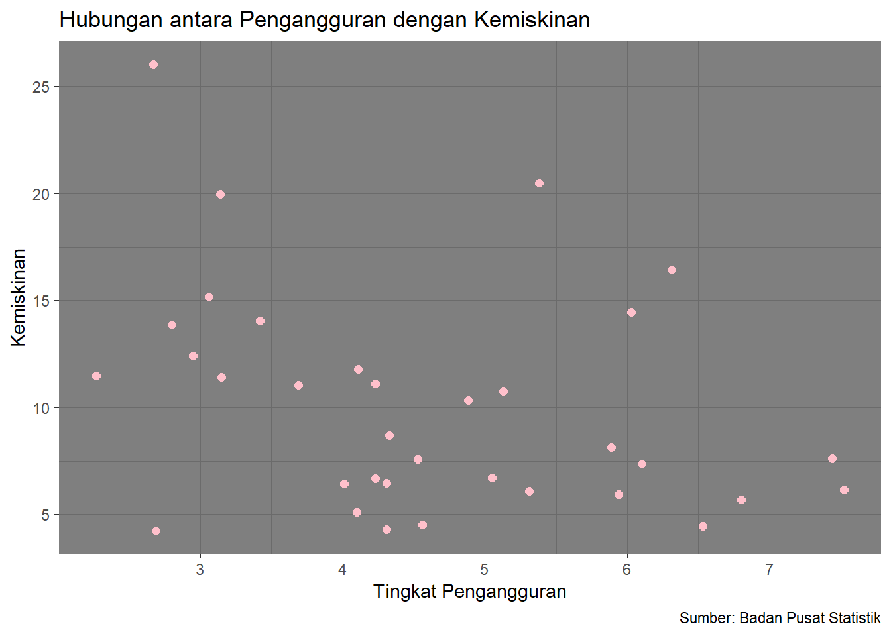

library("png")
library("readxl")
library("ggplot2")Hubungan antara Tingkat Pengangguran dengan Tingkat Kemiskinan
Metode Penelitian Politeknik APP Jakarta

1 Pendahuluan
1.1 Latar belakang
Tingkat pengangguran dan kemiskinan merupakan dua aspek utama dalam kesejahteraan di dalam suatu negara. Namun, kesejahteraan masyarakat semakin menurun karena menganggur dan tentunya akan meningkatkan peluang mereka terjebak dalam kemiskinan karena tidak memiliki pendapatan. Penelitian ini berisi pembahasan mengenai hubungan dan pengaruh tingkat pengangguran dengan tingkat kemiskinan di Indonesia.
1.2 Ruang lingkup
Penelitian ini berisi analisis data tingkat pengangguran dan tingkat kemiskinan di setiap provinsi di Indonesia pada tahun 2023. Fokus utama dari penelitian ini adalah mengetahui bagaimana dampak tingkat pengangguran terhadap tingkat kemiskinan di Indonesia dan mengidentifikasi pola hubungan di antara keduanya.
1.3 Rumusan masalah
Bagaimana hubungan antara tingkat pengangguran dengan tingkat kemiskinan pada tahun 2023?
Apakah tingkat pengangguran memiliki pengaruh yang signifikan terhadap tingkat kemiskinan?
1.4 Tujuan dan manfaat penelitian
Tujuan penelitian ini bertujuan untuk menginformasikan bahwa terdapat hubungan dan pengaruh dari tingkat pengangguran terhadap tingkat kemiskinan.
Penelitian ini diharapkan dapat menjadi wawasan bahwa diperlukannya kebijakan ekonomi yang lebih efektif dan berkelanjutan dalam mengurangi tingkat pengangguran dan tingkat kemiskinan.
1.5 Package
Penelitian ini menggunakan beberapa package, di anataranya adalah:
2 Studi pustaka
Pengangguran
Menurut Sukirno bahwa pengangguran merupakan suatu keadaan dimana seseorang yang tergolong dalam angkatan kerja ingin mendapatkan pekerjaan tetapi mereka belum dapat memperoleh pekerjaan tersebut. Sementara menurut Kaufman dan Hotchkiss, pengangguran merupakan suatu ukuran yang dilakukan jika seseorang tidak memiliki pekerjaan tetapi mereka sedang melakukan usaha secara aktif dalam empat minggu terakhir untuk mencari pekerjaan.
Kemiskinan
Kemiskinan adalah keadaan serba kekurangan harta dan benda berharga yang diderita oleh seseorang atau sekelompok orang yang hidup dalam lingkungan serba miskin atau kekurangan modal, baik dalam pengertian uang, pengetahuan maupun, kebutuhan sosial, politik, hukum maupun akses terhadap fasilitas pelayanan umum, kesempatan berusaha dan bekerja.
3 Metode penelitian
3.1 Data
Data yang digunakan diperoleh dari sumber resmi seperti Badan Pusat Statistik (BPS).
| Provinsi | Pengangguran(%) | Kemiskinan(%) |
|---|---|---|
| Aceh | 6.03 | 14.45 |
| Sumatera Utara | 5.89 | 8.15 |
| Sumatera Barat | 5.94 | 5.95 |
| Riau | 4.23 | 6.68 |
| Jambi | 4.53 | 7.58 |
| Sumatera Selatan | 4.11 | 11.78 |
| Bengkulu | 3.42 | 14.04 |
| Lampung | 4.23 | 11.11 |
| Kep. Bangka Belitung | 4.56 | 4.52 |
| Kep. Riau | 6.80 | 5.69 |
| DKI Jakarta | 6.53 | 4.44 |
| Jawa Barat | 7.44 | 7.62 |
| Jawa Tengah | 5.13 | 10.77 |
| DI Yogyakarta | 3.69 | 11.04 |
| Jawa Timur | 4.88 | 10.35 |
| Banten | 7.52 | 6.17 |
| Bali | 2.69 | 4.25 |
| NTB | 2.80 | 13.85 |
| NTT | 3.14 | 19.96 |
| Kalimantan Barat | 5.05 | 6.71 |
| Kalimantan Tengah | 4.10 | 5.11 |
| Kalimantan Selatan | 4.31 | 4.29 |
| Kalimantan Timur | 5.31 | 6.11 |
| Kalimantan Utara | 4.01 | 6.45 |
| Sulawesi Utara | 6.10 | 7.38 |
| Sulawesi Tengah | 2.95 | 12.41 |
| Sulawesi Selatan | 4.33 | 8.70 |
| Sulawesi Tenggara | 3.15 | 11.43 |
| Gorontalo | 3.06 | 15.15 |
| Sulawesi Barat | 2.27 | 11.49 |
| Maluku | 6.31 | 16.42 |
| Maluku Utara | 4.31 | 6.46 |
| Papua Barat | 5.38 | 20.49 |
| Papua | 2.67 | 26.03 |
library("readxl")
dat<-read_excel("nganggurdanmiskin.xlsx")
head(dat)# A tibble: 6 × 2
x y
<dbl> <dbl>
1 6.03 14.4
2 5.89 8.15
3 5.94 5.95
4 4.23 6.68
5 4.53 7.58
6 4.11 11.8 3.2 Metode analisis
Penelitian ini menggunakan analisis regresi untuk menguji hubungan antara tingkat pengangguran dengan tingkat kemiskinan di berbagai provinsi di Indonesia pada tahun 2023. Analisis regresi ini akan memberikan pemahaman yang lebih mendalam tentang pengaruh tingkat pengangguran terhadap tingkat kemiskinan. Spesifikasi yang dilakukan adalah:
\[ y_{t}=\beta_0 + \beta_1 x_t+\mu_t \] di mana \(y_t\) adalah tingkat pengangguran dan \(x_t\) adalah tingkat kemiskinan.
4 Pembahasan
4.1 Pembahasan masalah
Berikut merupakan visualisasi dari hubungan antara tingkat pengangguran dengan tingkat kemiskinan.
library("ggplot2")
ggplot(data=dat,aes(x=x,y=y)) +
geom_point(color="pink",size=2) +
labs(title="Hubungan antara Pengangguran dengan Kemiskinan",
x="Tingkat Pengangguran",
y="Kemiskinan",
caption = "Sumber: Badan Pusat Statistik") +
theme_dark()
4.2 Analisis masalah
Hasil regresinya adalah sebagai berikut.
reg<-lm(y~x,data=dat)
summary(reg)
Call:
lm(formula = y ~ x, data = dat)
Residuals:
Min 1Q Median 3Q Max
-8.2952 -3.0233 -0.4189 1.2897 13.4593
Coefficients:
Estimate Std. Error t value Pr(>|t|)
(Intercept) 15.979 2.917 5.479 4.93e-06 ***
x -1.277 0.605 -2.110 0.0427 *
---
Signif. codes: 0 '***' 0.001 '**' 0.01 '*' 0.05 '.' 0.1 ' ' 1
Residual standard error: 4.932 on 32 degrees of freedom
Multiple R-squared: 0.1222, Adjusted R-squared: 0.09472
F-statistic: 4.453 on 1 and 32 DF, p-value: 0.042755 Kesimpulan
Berdasarkan analisis regresi yang dilakukan terhadap data tingkat pengangguran dan tingkat kemiskinan di berbagai provinsi Indonesia pada tahun 2023, ditemukan hubungan yang signifikan antara variabel pengangguran dengan variabel kemiskinan. Koefisien negatif yang signifikan untuk variabel pengangguran menunjukkan bahwa peningkatan tingkat pengangguran berdampak pada kenaikan tingkat kemiskinan di setiap provinsi di Indonesia. Hal ini menunjukkan perlunya perhatian yang lebih besar terhadap kebijakan dan upaya untuk mengurangi tingkat pengangguran untuk mengendalikan kemiskinan di Indonesia.
6 Referensi
BPS Provinsi Jawa Timur. (t.t.). Diambil 10 Januari 2024, dari https://jatim.bps.go.id/indicator/23/344/1/persentase-penduduk-miskin-menurut-provinsi-.html
Indonesia, B. P. S. (t.t.). Tingkat Pengangguran Terbuka Menurut Provinsi—Tabel Statistik. Diambil 10 Januari 2024, dari https://www.bps.go.id/id/statistics-table/2/NTQzIzI=/tingkat-pengangguran-terbuka–agustus-2023.html
Mardiatillah, R., Panorama, M., & Sumantri, R. (2021). Pengaruh pengangguran dan inflasi terhadap tingkat kemiskinan di sumatera selatan tahun 2015-2019. Journal FEB Unmul, 18(2). https://journal.feb.unmul.ac.id/index.php/KINERJA/article/download/9139/1289